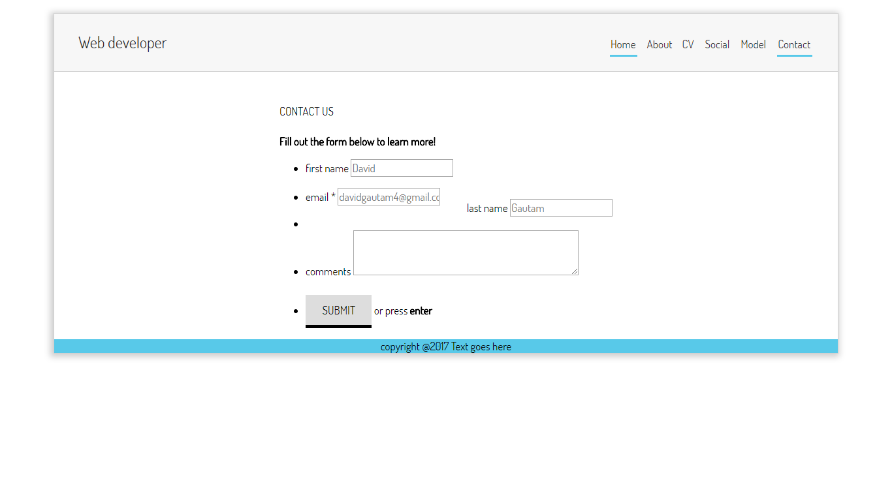

INTRODUCTION
The following report shortly describes about the portfolio of myself as a web developer which is truly a creative idea for assignment. As I had little concept about the layouts and designs for a web portfolio, I went through some of the websites of company and some portfolios themselves. There came many problems and obstacles during the procedure of the completion of webpage. Many of them were created using Web Languages such as JavaScript and PHP, but as we were allowed to use only HTML 5 and CSS 3 functionality only, the webpage I made is dynamic. I went to many website for creating the website. In my website here we can find different types of functionality and so on. Simple layouts are used in my website as photo editing software are used such as snipping tool, paint etc. Simple layout are used as per the relevant subject. By using different HTML code correspondent CSS function are used to create a designated website as a CV for a dynamic and responsive website.
Designs
In the designing part, a combination of layouts are used for the relevant subject. Some designs and wireframes are made using Photo editing software and some are hand made using pencil. Different types of section are made as per the design to show the descriptive notion of the correspondent design. According to the design following wireframe are made which are listed below in the chronological order. Wireframes A website wireframe is a page schematic or screen blueprint, which is a visual guide that represents the skeletal framework of website. It is created for the purpose of arranging elements for relevant purpose. The purpose of wireframe it to depict about the webpage of my resume or CV as a web developer.
Wireframe | HOME
It is a screen blueprint of home page, which is also a visual guide that represents the skeletal framework of web site of the home page in sematic order as mention below. The home, cv, social, model, about and contact pages will be of same layout for all six pages will be saved in navigation bar, title in the title bar and which is to be operated in the same way. It will function in a similar way in each media devices. The navigation bar contains the relevant links. The major change is only in section part.
Wireframe | ABOUT
It is a page schematic of the about page which represents framework of web site of the home page in sematic order as mention below. As the change is only in Section Part, it is similar to HOME page but the image and text are displayed in row and a new div is displayed in column to add text, but displayed in column in mobile view.

Wireframe | CONTACT
It is a prototype which represents framework of the home page in sematic order. The section part contains the form to connect with the developer i.e. me. Currently, the form is not dynamic. The ICONS section contains first name, last name, email, comment and submit function. This page contains a form that connects the website viewers to the developer i.e. me directly through different sources of media. The form needs to be filled up and submitted in line for interaction with the user. JavaScript validations are not used in the form. The section part contains the form to connect with the developer. Currently, the form is not dynamic. The ICONS section contains the call button and location button
Wireframe | CURRICULLUM VITAE
It is a page schematic of the curriculum vitae page which represents framework of web site of the home page in sematic order as mention below. This relevant page contains all the required information related to educational qualifications, personal detail, professional experience, educational qualifications, skills and relevant coursework and field activities. It also contains the basic intro of myself to the viewers.
Wireframe | Social
It is a page schematic of the social page which represents framework of web site of the home page in sematic order as mention below. Different types of icons are used using a hover effect and prolonged as given.
Mock-up
It is a model or replica of a structure, which is used for instructional purposes which is an arrangement of text and pictures to be printed in order to properly explain the core replication of the webpage. In order to replicate the structure or webpage following correspondent screenshots are mentioned below.
Screenshots
Screenshots are the design toolkit which is used to create a descriptive final artwork of the website. Following screenshots are mentioned as follows to create a descriptive final artwork.
Screenshots | HOME
The HEADER, NAVIGATION BAR, TEXT and FOOTER sections will be of same layout for all six pages and which is to be operated in the same way. It will function in a similar way in each media devices. The navigation bar contains the relevant links. The major change is only in section part. For the HOME page, it will contain a div tag within a div tag to hold image and a text div for introduction which are major components of CSS.
SCREENSHOTS| ABOUT
As the change is only in Section Part, it is similar to HOME page but the image and text are displayed in row and a new div is displayed in column to add text, but displayed in column in mobile view.

SCREENSHOTS | CONTACT
The section part contains the form to connect with the developer i.e. me. Currently, the form is not dynamic. The ICONS section contains first name, last name, email, comment and submit function.
\SCREENSHOTS | Curriculum Vitae
This part contains corresponding function to display text. A new div introduced in row display - one for texts in a sequential manner. The relevant div are displayed in column in mobile view as per the responsiveness
OPERATION OF WEBSITE
Operation of website briefly describes about the overall component of the relevant function of the webpage. In other word it is the basic computations used in the web site as it is the combination of different part which as a whole makes up an effective output. In website different operations are used to make up the correspondent webpage.
Header
It is the part containing the title and links that joins the respective home, about, CV, social, model and contact respectively on clicking them. The contents are justified to top-right. Here different types of functionality are used such as hover, align and so on.
Navigation Bar
It is the part of a graphical user interface intended to aid visitors in accessing information which navigates to a separate webpage of the same website on clicking over the correspondent items. The items are displayed in flex in order to maintain size. It is a section which is implemented in file browsers, web browsers and as a design element of some web sites
Footer
This part contains the copyright of developer.
Responsive View
Header
It has width of 55%, and contains inline-flex which is the elements as the responsive view. It contains font-family: 'Dosis', sans-serif.
Navigation Bar
It has the max-width of 600px, min-height of 40px, line-height of 0.2px, border- bottom as 1px which is the elements of navigation bar using flex property to make web site responsive.
Links
It uses flex property and links the different page in one.
Footer
It has no changes in browser as it comprises of font-family: 'Dosis', sans-serif.
Information in Webpages (in brief)
HOME page
The homepage contains the basic introduction to the viewers of my website. The homage contains navigation bar that navigates the pages through the relevant navigation bar available. It has correspondent links to about, contact, model, CV and social. It contains a minimum part from all the other pages such as about, contact, model, CV and social. It will function in a similar way in each media devices. The home page contains the relevant links. The major change is only in section part. For the HOME page, it will contain a div tag within a div tag to hold image and a text div for introduction which are major components of CSS.
ABOUT page
This page mainly focuses on the personal information about the basic interest that I gradually started increasing. The courses that I was currently involved in and professional experience in the relevant field and similar courses completed in the past are also mentioned. The paragraphs at the top of the main on About Us page offers a bit more detail about the goal and main accomplishments. Fact sheet: A section following the summary elaborates on its key points and other essential facts about the basic information of myself. From the very beginning I had interest on web designing. Even though in a fast job-growth market, that doesn’t mean I should pay any less attention to resume than other occupations. Plus, as I was able built and manage a lot of work from anywhere in the world, more of these works will be outsourced to overseas workers in the near future. Unless the door is opened and get an interview, I am going to land the perfect job or secure the role that gives me career the boost needed to get to the next level. Knowledge of and experience with multiple programming languages and digital multimedia software is seen as critical requirements. Thus, I have included this relevant source of information in the technical skills section of my resume. Additionally, with the growing importance of mobile highlighting my ability to deliver responsive websites and thus, mobile apps can separate you from the crowds of applicants
CONTACT page
This page contains a form that connects the website viewers to the developer i.e. me directly through different sources of media. The form needs to be filled up and submitted in line for interaction with the user. JavaScript validations are not used in the form. The section part contains the form to connect with the developer. Currently, the form is not dynamic. The ICONS section contains the call button and location button.
CURRICULUM VITAE page
This relevant page contains all the required information related to educational qualifications, personal detail, professional experience, educational qualifications, skills and relevant coursework and field activities. It also contains the basic intro of myself to the viewers.
VALIDATION
I used W3C CSS validation service for checking the validation procedure and in the process there were no errors found in HTML or CSS codes but warnings were detected in W3C validation service as shown below:
Conclusion
In conclusion, it is an assignment that is a good possible way to further enhance and aspire the students’ knowledge on web designing and computation. We were keen and encouraged to enhance all the function, subjective notion and objective notion taught till the end of 1st semester and add additional features to the relevant website using assistance from W3schools organization. This has truly endeavor every aspects of the learning phase and hence helped to do correspondent tasks and so on.
References
Alfredo (2015), Black White Social Media Icons FREE! [Image]. Available from: https://www.dealbuddy.com/free-social-media-icons/. [Accessed Date: March 15th, 2018] ZFunx Web Developement Ideas YouTube symbol Free Icon [image]. Available from: https://www.youtube.com/channel/UCU5SqAfXADk50eOjQqdsVlA symbol_717334.htm#term=logo & page=1&position=34. [Accessed Date 16th April] (1999-2015), HTML AND CSS Available from: https://www.w3schools.com/ [Accessed Date: March 17th, 2018]